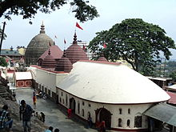

In my openion,Guwahati is famous for temples.Such the famous temple name Kamakhya.
Here Some Information about Temples:
Being the centre for Tantra worship this temple attracts thousands of tantra devotees in an annual festival known as the Ambubachi Mela. Another annual celebration is the Manasha Puja. Durga Puja is also celebrated annually at Kamakhya during Navaratri in the autumn. This five-day festival attracts several thousand visitors
